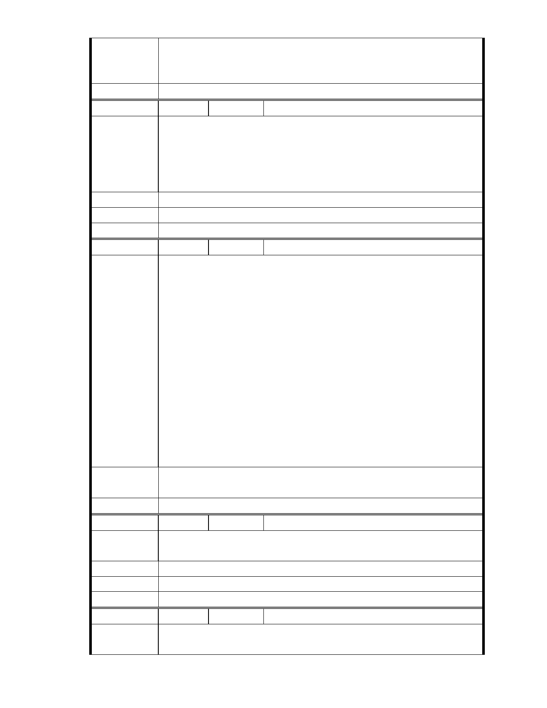

委員會決議
二、相關陳情意見將納入本案審查人民意見，依法定程序辦理。
三、後續審理程序將要求申請人加強與在地區民、社會大眾，就基地現
況、規劃方案及環境助益作為等方面加強溝通。
同編號 1。
編號
陳情理由
建議辦法
市府說明
委員會決議
72 陳情人 市長信箱（ MA201012060225 ）
市長您好,慈濟是一個能讓大家信任的團體. 慈濟內湖這一塊土地,好在
是讓慈濟購得,若是讓一般的財團購得,不知道要如何大興土木地開發,
環保人士們一定更無能為力. 那才是噩夢的開始. 證嚴法師是一位愛山
愛水的宗教家,她倡導回歸自然,我相信慈濟在這裡絕對不會挖山砍樹,
或者把建築物蓋在山坡上. 所以我歡迎慈濟來內湖.
相關陳情意見將納入本案審查人民意見，依法定程序辦理。
同編號 1。
編
號 73
陳情人 市長信箱（ MA201012060266 ）
敬愛的市長:恭喜您
我們也很高興 有您來帶領台北市
帶來陽光 健康 快樂的城市
內湖大湖公園是
一個山明水秀的湖畔 對面卻是一片的鐵皮屋
真的有礙瞻觀
陳情理由
國際首長人士 常去內湖慈濟環保教育站參訪
竟然是破爛鐵皮屋 真會貽笑大方 有失國家的體面
請讓慈濟整建 感激不盡
反對的假環保團體要發表意見前
請先看過現場?
全部都是平地
官慮晴 敬上
建議辦法
市 府 說 明 相關陳情意見將納入本案審查人民意見，依法定程序辦理。
委 員 會 決 議 同編號 1。
編
號 74
陳情人 市長信箱（ MA201012060274 ）
陳 情 理 由 本人在內湖地區上班,對慈濟內湖開發也很認同,希望上班的環境能更
好,也希望市府能支持
建議辦法
市 府 說 明 相關陳情意見將納入本案審查人民意見，依法定程序辦理。
委 員 會 決 議 同編號 1。
編
號 75
陳情人
郝市長,你好:
陳情理由
市長信箱（ MA201012060067 ）
- 65 -